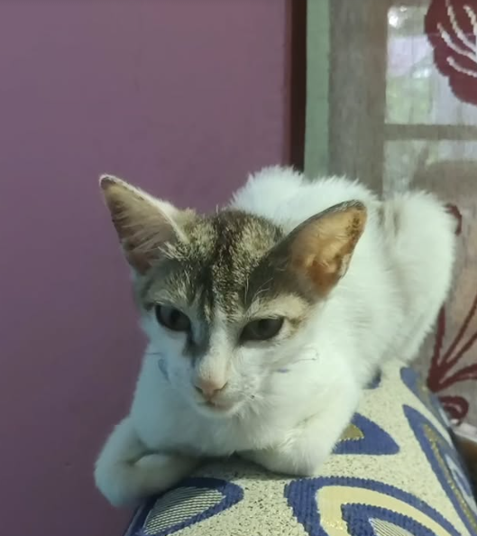
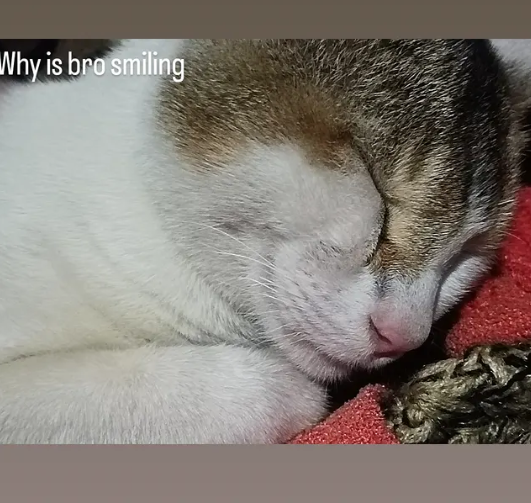
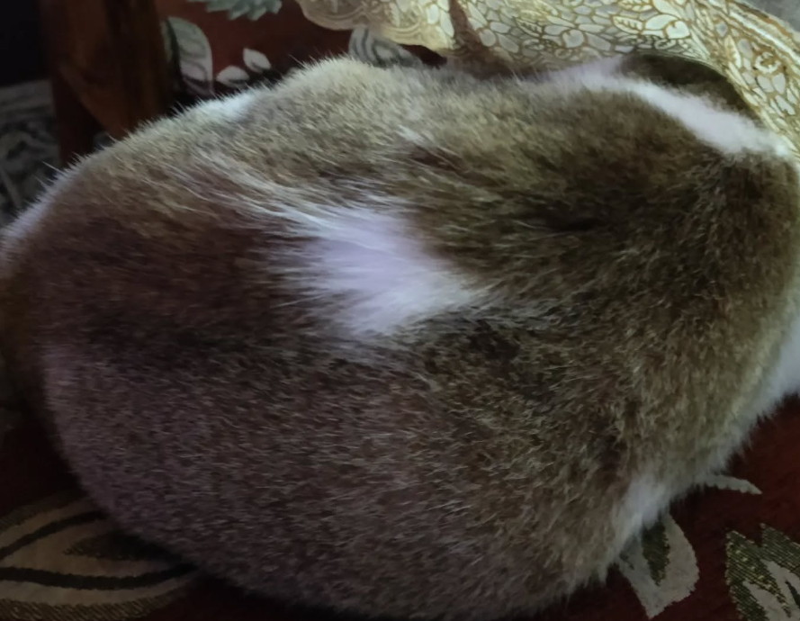

🐾 From Rosie To Shiny ✨
Hi, my sweet hooman.
I know your heart is broken right now… but I need you to hear me.
I was just a little soul, lost in a big world—tired, hungry, scared. And then you found me.
You gave me water when no one noticed. You talked to me softly, like I mattered.
You saw me. You cared.
Even when I was too weak to show it… I felt it.
Your warmth. Your voice. Your love.
I didn’t leave this world angry or alone—I left knowing someone loved me.
And that someone was you.
Please don’t cry thinking you failed me.
You were my angel.
And I would choose you again, a thousand times, even for a short life.
I'll always be near you. Every time you look at the sky or feel a soft breeze—I’ll be there,
brushing your cheek with a whisper that says:
“Thank you for loving me when no one else did.”
“I love you too.”
Forever your Rosie. 🐾


